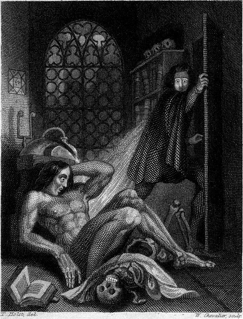

Mary Wollstonecraft Shelley
Frankenstein, or the Modern Prometheus
Revised Edition, 1831
Édité par la classe ELD718-2024

Sommaire
Introduction
The Publishers of the Standard Novels, in selecting “Frankenstein” for one of their series, expressed a wish that I should furnish them with some account of the origin of the story. I am the more willing to comply, because I shall thus give a general answer to the question, so very frequently asked me—“How I, then a young girl, came to think of, and to dilate upon, so very hideous an idea?" It is true that I am very averse to bringing myself forward in print; but as my account will only appear as an appendage to a former production, and as it will be confined to such topics as have connection with my authorship alone, I can scarcely accuse myself of a personal intrusion.
It is not singular that, as the daughter of two persons of distinguished literary celebrity, I should very early in life have thought of writing. As a child I scribbled; and my favourite pastime, during the hours given me for recreation, was to “write stories.” Still I had a dearer pleasure than this, which was the formation of castles in the air—the indulging in waking dreams—the following up trains of thought, which had for their subject the formation of a succession of imaginary incidents. My dreams were at once more fantastic and agreeable than my writings. In the latter I was a close imitator—rather doing as others had done, than putting down the suggestions of my own mind. What I wrote was intended at least for one other eye—my Childhood’s companion and friend; but my dreams were all my own; I accounted for them to nobody; they were my refuge when annoyed—my dearest pleasure when free.
I lived principally in the country as a girl, and passed a considerable time in Scotland. I made occasional visits to the more picturesque parts; but my habitual residence was on the blank and dreary northern shores of the Tay, near Dundee. Blank and dreary on retrospection I call them; they were not so to me then. They were the eyry of freedom, and the pleasant region where unheeded I could commune with the creatures of my fancy. I wrote then—but in a most common-place style. It was beneath the trees of the grounds belonging to our house, or on the bleak sides of the woodless mountains near, that my true compositions, the airy flights of my imagination, were born and fostered. I did not make myself the heroine of my tales. Life appeared to me too common-place an affair as regarded myself. I could not figure to myself that romantic woes or wonderful events would ever be my lot; but I was not confined to my own identity, and I could people the hours with creations far more interesting to me at that age, than my own sensations.
After this my life became busier, and reality stood in place of fiction. My husband, however, was from the first, very anxious that I should prove myself worthy of my parentage, and enrol myself on the page of fame. He was for ever inciting me to obtain literary reputation, which even on my own part I cared for then, though since I have become infinitely indifferent to it. At this time he desired that I should write, not so much with the idea that I could produce any thing worthy of notice, but that he might himself judge how far I possessed the promise of better things hereafter. Still I did nothing. Travelling, and the cares of a family, occupied my time; and study, in the way of reading, or improving my ideas in communication with his far more cultivated mind, was all of literary employment that engaged my attention.
In the summer of 1816, we visited Switzerland, and became the neighbours of Lord Byron. At first we spent our pleasant hours on the lake, or wandering on its shores; and Lord Byron, who was writing the third canto of Childe Harold, was the only one among us who put his thoughts upon paper. These, as he brought them successively to us, clothed in all the light and harmony of poetry, seemed to stamp as divine the glories of heaven and earth, whose influences we partook with him.
But it proved a wet, ungenial summer, and incessant rain often confined us for days to the house. Some volumes of ghost stories, translated from the German into French, fell into our hands. There was the History of the Inconstant Lover, who, when he thought to clasp the bride to whom he had pledged his vows, found himself in the arms of the pale ghost of her whom he had deserted. There was the tale of the sinful founder of his race, whose miserable doom it was to bestow the kiss of death on all the younger sons of his fated house, just when they reached the age of promise. His gigantic, shadowy form, clothed like the ghost in Hamlet, in complete armour, but with the beaver up, was seen at midnight, by the moon’s fitful beams, to advance slowly along the gloomy avenue. The shape was lost beneath the shadow of the castle walls; but soon a gate swung back, a step was heard, the door of the chamber opened, and he advanced to the couch of the blooming youths, cradled in healthy sleep. Eternal sorrow sat upon his face as he bent down and kissed the forehead of the boys, who from that hour withered like flowers snapt upon the stalk. I have not seen these stories since then; but their incidents are as fresh in my mind as if I had read them yesterday.
“We will each write a ghost story,” said Lord Byron; and his proposition was acceded to. There were four of us. The noble author began a tale, a fragment of which he printed at the end of his poem of Mazeppa. Shelley, more apt to embody ideas and sentiments in the radiance of brilliant imagery, and in the music of the most melodious verse that adorns our language, than to invent the machinery of a story, commenced one founded on the experiences of his early life. Poor Palidori had some terrible idea about a skull-headed lady, who was so punished for peeping through a key-hole—what to see I forget—something very shocking and wrong of course; but when she was reduced to a worse condition than the renowned Tom of Coventry, he did not know what to do with her, and was obliged to despatch her to the tomb of the Capulets, the only place for which she was fitted. The illustrious poets also, annoyed by the platitude of prose, speedily relinquished their uncongenial task.
I busied myself to think of a story,—a story to rival those which had excited us to this task. One which would speak to the mysterious fears of our nature, and awaken thrilling horror—one to make the reader dread to look round, to curdle the blood, and quicken the beatings of the heart. If I did not accomplish these things, my ghost story would be unworthy of its name. I thought and pondered—vainly. I felt that blank incapability of invention which is the greatest misery of authorship, when dull Nothing replies to our anxious invocations. Have you thought of a story? I was asked each morning, and each morning I was forced to reply with a mortifying negative.
Every thing must have a beginning, to speak in Sanchean phrase; and that beginning must be linked to something that went before. The Hindoos give the world an elephant to support it, but they make the elephant stand upon a tortoise. Invention, it must be humbly admitted, does not consist in creating out of void, but out of chaos; the materials must, in the first place, be afforded: it can give form to dark, shapeless substances, but cannot bring into being the substance itself. In all matters of discovery and invention, even of those that appertain to the imagination, we are continually reminded of the story of Columbus and his egg. Invention consists in the capacity of seizing on the capabilities of a subject, and in the power of moulding and fashioning ideas suggested to it.
Many and long were the conversations between Lord Byron and Shelley, to which I was a devout but nearly silent listener. During one of these, various philosophical doctrines were discussed, and among others the nature of the principle of life, and whether there was any probability of its ever being discovered and communicated. They talked of the experiments of Dr. Darwin, (I speak not of what the Doctor really did, or said that he did, but, as more to my purpose, of what was then spoken of as having been done by him,) who preserved a piece of vermicelli in a glass case, till by some extraordinary means it began to move with voluntary motion. Not thus, after all, would life be given. Perhaps a corpse would be re-animated; galvanism had given token of such things: perhaps the component parts of a creature might be manufactured, brought together, and endued with vital warmth.
Night waned upon this talk, and even the witching hour had gone by, before we retired to rest. When I placed my head on my pillow, I did not sleep, nor could I be said to think. My imagination, unbidden, possessed and guided me, gifting the successive images that arose in my mind with a vividness far beyond the usual bounds of reverie. I saw—with shut eyes, but acute mental vision,—I saw the pale student of unhallowed arts kneeling beside the thing he had put together. I saw the hideous phantasm of a man stretched out, and then, on the working of some powerful engine, show signs of life, and stir with an uneasy, half vital motion. Frightful must it be; for supremely frightful would be the effect of any human endeavour to mock the stupendous mechanism of the Creator of the world. His success would terrify the artist; he would rush away from his odious handywork, horror-stricken. He would hope that, left to itself, the slight spark of life which he had communicated would fade; that this thing, which had received such imperfect animation, would subside into dead matter; and he might sleep in the belief that the silence of the grave would quench for ever the transient existence of the hideous corpse which he had looked upon as the cradle of life. He sleeps; but he is awakened; he opens his eyes; behold the horrid thing stands at his bedside, opening his curtains, and looking on him with yellow, watery, but speculative eyes.
I opened mine in terror. The idea so possessed my mind, that a thrill of fear ran through me, and I wished to exchange the ghastly image of my fancy for the realities around. I see them still; the very room, the dark parquet, the closed shutters, with the moonlight struggling through, and the sense I had that the glassy lake and white high Alps were beyond. I could not so easily get rid of my hideous phantom; still it haunted me. I must try to think of something else. I recurred to my ghost story,—my tiresome unlucky ghost story! O! if I could only contrive one which would frighten my reader as I myself had been frightened that night!
Swift as light and as cheering was the idea that broke in upon me. “I have found it! What terrified me will terrify others; and I need only describe the spectre which had haunted my midnight pillow.” On the morrow I announced that I had thought of a story. I began that day with the words, It was on a dreary night of November, making only a transcript of the grim terrors of my waking dream.
At first I thought but of a few pages—of a short tale; but Shelley urged me to develope the idea at greater length. I certainly did not owe the suggestion of one incident, nor scarcely of one train of feeling, to my husband, and yet but for his incitement, it would never have taken the form in which it was presented to the world. From this declaration I must except the preface. As far as I can recollect, it was entirely written by him.
And now, once again, I bid my hideous progeny go forth and prosper. I have an affection for it, for it was the offspring of happy days, when death and grief were but words, which found no true echo in my heart. Its several pages speak of many a walk, many a drive, and many a conversation, when I was not alone; and my companion was one who, in this world, I shall never see more. But this is for myself; my readers have nothing to do with these associations.
I will add but one word as to the alterations I have made. They are principally those of style. I have changed no portion of the story, nor introduced any new ideas or circumstances. I have mended the language where it was so bald as to interfere with the interest of the narrative; and these changes occur almost exclusively in the beginning of the first volume. Throughout they are entirely confined to such parts as are mere adjuncts to the story, leaving the core and substance of it untouched.
M. W. S.
London, October 15. 1831.

Chapitre 1
I am by birth a Genevese; and my family is one of the most distinguished of that republic. My ancestors had been for many years counsellors and syndics; and my father had filled several public situations with honour and reputation. He was respected by all who knew him, for his integrity and indefatigable attention to public business. He passed his younger days perpetually occupied by the affairs of his country; a variety of circumstances had prevented his marrying early, nor was it until the decline of life that he became a husband and the father of a family.
As the circumstances of his marriage illustrate his character, I cannot refrain from relating them. One of his most intimate friends was a merchant, who, from a flourishing state, fell, through numerous mischances, into poverty. This man, whose name was Beaufort, was of a proud and unbending disposition, and could not bear to live in poverty and oblivion in the same country where he had formerly been distinguished for his rank and magnificence. Having paid his debts, therefore, in the most honourable manner, he retreated with his daughter to the town of Lucerne, where he lived unknown and in wretchedness. My father loved Beaufort with the truest friendship, and was deeply grieved by his retreat in these unfortunate circumstances. He bitterly deplored the false pride which led his friend to a conduct so little worthy of the affection that united them. He lost no time in endeavouring to seek him out, with the hope of persuading him to begin the world again through his credit and assistance.
Beaufort had taken effectual measures to conceal himself; and it was ten months before my father discovered his abode. Overjoyed at this discovery, he hastened to the house, which was situated in a mean street, near the Reuss. But when he entered, misery and despair alone welcomed him. Beaufort had saved but a very small sum of money from the wreck of his fortunes; but it was sufficient to provide him with sustenance for some months, and in the mean time he hoped to procure some respectable employment in a merchant’s house. The interval was, consequently, spent in inaction; his grief only became more deep and rankling, when he had leisure for reflection; and at length it took so fast hold of his mind, that at the end of three months he lay on a bed of sickness, incapable of any exertion.
His daughter attended him with the greatest tenderness; but she saw with despair that their little fund was rapidly decreasing, and that there was no other prospect of support. But Caroline Beaufort possessed a mind of an uncommon mould; and her courage rose to support her in her adversity. She procured plain work; she plaited straw; and by various means contrived to earn a pittance scarcely sufficient to support life.
Several months passed in this manner. Her father grew worse; her time was more entirely occupied in attending him; her means of subsistence decreased; and in the tenth month her father died in her arms, leaving her an orphan and a beggar. This last blow overcame her; and she knelt by Beaufort’s coffin, weeping bitterly, when my father entered the chamber. He came like a protecting spirit to the poor girl, who committed herself to his care; and after the interment of his friend, he conducted her to Geneva, and placed her under the protection of a relation. Two years after this event Caroline became his wife.
There was a considerable difference between the ages of my parents, but this circumstance seemed to unite them only closer in bonds of devoted affection. There was a sense of justice in my father’s upright mind, which rendered it necessary that he should approve highly to love strongly. Perhaps during former years he had suffered from the late-discovered unworthiness of one beloved, and so was disposed to set a greater value on tried worth. There was a show of gratitude and worship in his attachment to my mother, differing wholly from the doating fondness of age, for it was inspired by reverence for her virtues, and a desire to be the means of, in some degree, recompensing her for the sorrows she had endured, but which gave inexpressible grace to his behaviour to her. Every thing was made to yield to her wishes and her convenience. He strove to shelter her, as a fair exotic is sheltered by the gardener, from every rougher wind, and to surround her with all that could tend to excite pleasurable emotion in her soft and benevolent mind. Her health, and even the tranquillity of her hitherto constant spirit, had been shaken by what she had gone through. During the two years that had elapsed previous to their marriage my father had gradually relinquished all his public functions; and immediately after their union they sought the pleasant climate of Italy, and the change of scene and interest attendant on a tour through that land of wonders, as a restorative for her weakened frame.
From Italy they visited Germany and France. I, their eldest child, was born at Naples, and as an infant accompanied them in their rambles. I remained for several years their only child. Much as they were attached to each other, they seemed to draw inexhaustible stores of affection from a very mine of love to bestow them upon me. My mother’s tender caresses, and my father’s smile of benevolent pleasure while regarding me, are my first recollections. I was their plaything and their idol, and something better— their child, the innocent and helpless creature Bestowed on them by Heaven, whom to bring up to good, and whose future lot it was in their hands to direct to happiness or misery, according as they fulfilled their duties towards me. With this deep consciousness of what they owed towards the being to which they had given life, added to the active spirit of tenderness that animated both, it may be imagined that while during every hour of my infant life I received a lesson of patience, of charity, and of self-control, I was so guided by a silken cord, that all seemed but one train of enjoyment to me.
For a long time I was their only care. My mother had much desired to have a daughter, but I continued their single offspring. When I was about five years old, while making an excursion beyond the frontiers of Italy, they passed a week on the shores of the Lake of Como. Their benevolent disposition often made them enter the cottages of the poor. This, to my mother, was more than a duty; it was a necessity, a passion,—remembering what she had suffered, and how she had been relieved,—for her to act in her turn the guardian angel to the afflicted. During one of their walks a poor cot in the foldings of a vale attracted their notice, as being singularly disconsolate, while the number of half-clothed children gathered about it, spoke of penury in its worst shape. One day, when my father had gone by himself to Milan, my mother, accompanied by me, visited this abode. She found a peasant and his wife, hard working, bent down by care and labour, distributing a scanty meal to five hungry babes. Among these there was one which attracted my mother far above all the rest. She appeared of a different stock. The four others were dark-eyed, hardy little vagrants; this child was thin, and very fair. Her hair was the brightest living gold, and, despite the poverty of her clothing, seemed to set a crown of distinction on her head. Her brow was clear and ample, her blue eyes cloudless, and her lips and the moulding of her face so expressive of sensibility and sweetness, that none could behold her without looking on her as of a distinct species, a being heaven-sent, and bearing a celestial stamp in all her features.
The peasant woman, perceiving that my mother fixed eyes of wonder and admiration on this lovely girl, eagerly communicated her history. She was not her child, but the daughter of a Milanese nobleman. Her mother was a German, and had died on giving her birth. The infant had been placed with these good people to nurse: they were better off then. They had not been long married, and their eldest child was but just born. The father of their charge was one of those Italians nursed in the memory of the antique glory of Italy,—one among the schiavi ognor frementi, who exerted himself to obtain the liberty of his country. He became the victim of its weakness. Whether he had died, or still lingered in the dungeons of Austria, was not known. His property was confiscated, his child became an orphan and a beggar. She continued with her foster parents, and bloomed in their rude abode, fairer than a garden rose among dark-leaved brambles.
When my father returned from Milan, he found playing with me in the hall of our villa, a child fairer than pictured cherub—a creature who seemed to shed radiance from her looks, and whose form and motions were lighter than the chamois of the hills. The apparition was soon explained. With his permission my mother prevailed on her rustic guardians to yield their charge to her. They were fond of the sweet orphan. Her presence had seemed a blessing to them; but it would be unfair to her to keep her in poverty and want, when Providence afforded her such powerful protection. They consulted their village priest, and the result was, that Elizabeth Lavenza became the inmate of my parents’ house—my more than sister—the beautiful and adored companion of all my occupations and my pleasures.
Every one loved Elizabeth. The passionate and almost reverential attachment with which all regarded her became, while I shared it, my pride and my delight. On the evening previous to her being brought to my home, my mother had said playfully,—“I have a pretty present for my Victor—to-morrow he shall have it.” And when, on the morrow, she presented Elizabeth to me as her promised gift, I, with childish seriousness, interpreted her words literally, and looked upon Elizabeth as mine—mine to protect, love, and cherish. All praises bestowed on her, I received as made to a possession of my own. We called each other familiarly by the name of cousin. No word, no expression could body forth the kind of relation in which she stood to me—my more than sister, since till death she was to be mine only.
Wikisource is constantly looking for new members. During the transcription and proofreading of this book, it’s possible that we made some errors. You can report them at this page.
The following users contributed to this book:
[The list of contributors has been omitted as requested.]
Chapitre 2
We were brought up together; there was not quite a year difference in our ages. I need not say that we were strangers to any species of disunion or dispute. Harmony was the soul of our companionship, and the diversity and contrast that subsisted in our characters drew us nearer together. Elizabeth was of a calmer and more concentrated disposition; but, with all my ardour, I was capable of a more intense application, and was more deeply smitten with the thirst for knowledge. She busied herself with following the aerial creations of the poets; and in the majestic wondrous scenes which surrounded our Swiss home—the sublime shapes of the mountains; the changes of the seasons; tempest and calm; the silence of winter, and the life and turbulence of our Alpine summers,—she found ample scope for admiration and delight. While my companion contemplated with a serious and satisfied spirit the magnificent appearances of things, I delighted in investigating their causes. The world was to me a secret which I desired to divine. Curiosity, earnest research to learn the hidden laws of nature, gladness akin to rapture, as they were unfolded to me, are among the earliest sensations I can remember.
On the birth of a second son, my junior by seven years, my parents gave up entirely their wandering life, and fixed themselves in their native country. We possessed a house in Geneva, and a campagne on Belrive, the eastern shore of the lake, at the distance of rather more than a league from the city. We resided principally in the latter, and the lives of my parents were passed in considerable seclusion. It was my temper to avoid a crowd, and to attach myself fervently to a few. I was indifferent, therefore, to my schoolfellows in general; but I united myself in the bonds of the closest friendship to one among them. Henry Clerval was the son of a merchant of Geneva. He was a boy of singular talent and fancy. He loved enterprise, hardship, and even danger, for its own sake. He was deeply read in books of chivalry and romance. He composed heroic songs, and began to write many a tale of enchantment and knightly adventure. He tried to make us act plays, and to enter into masquerades, in which the characters were drawn from the heroes of Roncesvalles, of the Round Table of King Arthur, and the chivalrous train who shed their blood to redeem the holy sepulchre from the hands of the infidels.
No human being could have passed a happier childhood than myself. My parents were possessed by the very spirit of kindness and indulgence. We felt that they were not the tyrants to rule our lot according to their caprice, but the agents and creators of all the many delights which we enjoyed. When I mingled with other families, I distinctly discerned how peculiarly fortunate my lot was, and gratitude assisted the developement of filial love.
My temper was sometimes violent, and my passions vehement; but by some law in my temperature they were turned, not towards childish pursuits, but to an eager desire to learn, and not to learn all things indiscriminately. I confess that neither the structure of languages, nor the code of governments, nor the politics of various states, possessed attractions for me. It was the secrets of heaven and earth that I desired to learn; and whether it was the outward substance of things, or the inner spirit of nature and the mysterious soul of man that occupied me, still my enquiries were directed to the metaphysical, or, in its highest sense, the physical secrets of the world.
Meanwhile Clerval occupied himself, so to speak, with the moral relations of things. The busy stage of life, the virtues of heroes, and the actions of men, were his theme; and his hope and his dream was to become one among those whose names are recorded in story, as the gallant and adventurous benefactors of our species. The saintly soul of Elizabeth shone like a shrine-dedicated lamp in our peaceful home. Her sympathy was ours; her smile, her soft voice, the sweet glance of her celestial eyes, were ever there to bless and animate us. She was the living spirit of love to soften and attract: I might have become sullen in my study, rough through the ardour of my nature, but that she was there to subdue me to a semblance of her own gentleness. And Clerval—could aught ill entrench on the noble spirit of Clerval?—yet he might not have been so perfectly humane, so thoughtful in his generosity—so full of kindness and tenderness amidst his passion for adventurous exploit, had she not unfolded to him the real loveliness of beneficence, and made the doing good the end and aim of his soaring ambition.
I feel exquisite pleasure in dwelling on the recollections of childhood, before misfortune had tainted my mind, and changed its bright visions of extensive usefulness into gloomy and narrow reflections upon self. Besides, in drawing the picture of my early days, I also record those events which led, by insensible steps, to my after tale of misery: for when I would account to myself for the birth of that passion, which afterwards ruled my destiny, I find it arise, like a mountain river, from ignoble and almost forgotten sources; but, swelling as it proceeded, it became the torrent which, in its course, has swept away all my hopes and joys.
Natural philosophy is the genius that has regulated my fate; I desire, therefore, in this narration, to state those facts which led to my predilection for that science. When I was thirteen years of age, we all went on a party of pleasure to the baths near Thonon: the inclemency of the weather obliged us to remain a day confined to the inn. In this house I chanced to find a volume of the works of Cornelius Agrippa. I opened it with apathy; the theory which he attempts to demonstrate, and the wonderful facts which he relates, soon changed this feeling into enthusiasm. A new light seemed to dawn upon my mind; and, bounding with joy, I communicated my discovery to my father. My father looked carelessly at the titlepage of my book, and said, “Ah! Cornelius Agrippa! My dear Victor, do not waste your time upon this; it is sad trash.”
If, instead of this remark, my father had taken the pains to explain to me, that the principles of Agrippa had been entirely exploded, and that a modern system of science had been introduced, which possessed much greater powers than the ancient, because the powers of the latter were chimerical, while those of the former were real and practical; under such circumstances, I should certainly have thrown Agrippa aside, and have contented my imagination, warmed as it was, by returning with greater ardour to my former studies. It is even possible, that the train of my ideas would never have received the fatal impulse that led to my ruin. But the cursory glance my father had taken of my volume by no means assured me that he was acquainted with its contents; and I continued to read with the greatest avidity.
When I returned home, my first care was to procure the whole works of this author, and afterwards of Paracelsus and Albertus Magnus. I read and studied the wild fancies of these writers with delight; they appeared to me treasures known to few beside myself. I have described myself as always having been embued with a fervent longing to penetrate the secrets of nature. In spite of the intense labour and wonderful discoveries of modern philosophers, I always came from my studies discontented and unsatisfied. Sir Isaac Newton is said to have avowed that he felt like a child picking up shells beside the great and unexplored ocean of truth. Those of his successors in each branch of natural philosophy with whom I was acquainted, appeared even to my boy’s apprehensions, as tyros engaged in the same pursuit.
The untaught peasant beheld the elements around him, and was acquainted with their practical uses. The most learned philosopher knew little more. He had partially unveiled the face of Nature, but her immortal lineaments were still a wonder and a mystery. He might dissect, anatomise, and give names; but, not to speak of a final cause, causes in their secondary and tertiary grades were utterly unknown to him. I had gazed upon the fortifications and impediments that seemed to keep human beings from entering the citadel of nature, and rashly and ignorantly I had repined.
But here were books, and here were men who had penetrated deeper and knew more. I took their word for all that they averred, and I became their disciple. It may appear strange that such should arise in the eighteenth century; but while I followed the routine of education in the schools of Geneva, I was, to a great degree, self taught with regard to my favourite studies. My father was not scientific, and I was left to struggle with a child’s blindness, added to a student’s thirst for knowledge. Under the guidance of my new preceptors, I entered with the greatest diligence into the search of the philosopher’s stone and the elixir of life; but the latter soon obtained my undivided attention. Wealth was an inferior object; but what glory would attend the discovery, if I could banish disease from the human frame, and render man invulnerable to any but a violent death!
Nor were these my only visions. The raising of ghosts or devils was a promise liberally accorded by my favourite authors, the fulfilment of which I most eagerly sought; and if my incantations were always unsuccessful, I attributed the failure rather to my own inexperience and mistake, than to a want of skill or fidelity in my instructors. And thus for a time I was occupied by exploded systems, mingling, like an unadept, a thousand contradictory theories, and floundering desperately in a very slough of multifarious knowledge, guided by an ardent imagination and childish reasoning, till an accident again changed the current of my ideas.
When I was about fifteen years old we had retired to our house near Belrive, when we witnessed a most violent and terrible thunder-storm. It advanced from behind the mountains of Jura; and the thunder burst at once with frightful loudness from various quarters of the heavens. I remained, while the storm lasted, watching its progress with curiosity and delight. As I stood at the door, on a sudden I beheld a stream of fire issue from an old and beautiful oak, which stood about twenty yards from our house; and so soon as the dazzling light vanished, the oak had disappeared, and nothing remained but a blasted stump. When we visited it the next morning, we found the tree shattered in a singular manner. It was not splintered by the shock, but entirely reduced to thin ribands of wood. I never beheld any thing so utterly destroyed.
Before this I was not unacquainted with the more obvious laws of electricity. On this occasion a man of great research in natural philosophy was with us, and, excited by this catastrophe, he entered on the explanation of a theory which he had formed on the subject of electricity and galvanism, which was at once new and astonishing to me. All that he said threw greatly into the shade Cornelius Agrippa, Albertus Magnus, and Paracelsus, the lords of my imagination; but by some fatality the overthrow of these men disinclined me to pursue my accustomed studies. It seemed to me as if nothing would or could ever be known. All that had so long engaged my attention suddenly grew despicable. By one of those caprices of the mind, which we are perhaps most subject to in early youth, I at once gave up my former occupations; set down natural history and all its progeny as a deformed and abortive creation; and entertained the greatest disdain for a would-be science, which could never even step within the threshold of real knowledge. In this mood of mind I betook myself to the mathematics, and the branches of study appertaining to that science, as being built upon secure foundations, and so worthy of my consideration.
Thus strangely are our souls constructed, and by such slight ligaments are we bound to prosperity or ruin. When I look back, it seems to me as if this almost miraculous change of inclination and will was the immediate suggestion of the guardian angel of my life—the last effort made by the spirit of preservation to avert the storm that was even then hanging in the stars, and ready to envelope me. Her victory was announced by an unusual tranquillity and gladness of soul, which followed the relinquishing of my ancient and latterly tormenting studies. It was thus that I was to be taught to associate evil with their prosecution, happiness with their disregard.
It was a strong effort of the spirit of good; but it was ineffectual. Destiny was too potent, and her immutable laws had decreed my utter and terrible destruction.
.
Chapitre 6
Clerval then put the following letter into my hands. It was from my own Elizabeth:—
“My dearest Cousin,
“You have been ill, very ill, and even the constant letters of dear kind Henry are not sufficient to reassure me on your account. You are forbidden to write—to hold a pen; yet one word from you, dear Victor, is necessary to calm our apprehensions. For a long time I have thought that each post would bring this line, and my persuasions have restrained my uncle from undertaking a journey to Ingolstadt. I have prevented his encountering the inconveniences and perhaps dangers of so long a journey; yet how often have I regretted not being able to perform it myself! I figure to myself that the task of attending on your sick bed has devolved on some mercenary old nurse, who could never guess your wishes, nor minister to them with the care and affection of your poor cousin. Yet that is over now: Clerval writes that indeed you are getting better. I eagerly hope that you will confirm this intelligence soon in your own handwriting.
“Get well—and return to us. You will find a happy, cheerful home, and friends who love you dearly. Your father’s health is vigorous, and he asks but to see you,—but to be assured that you are well; and not a care will ever cloud his benevolent countenance. How pleased you would be to remark the improvement of our Ernest! He is now sixteen, and full of activity and spirit. He is desirous to be a true Swiss, and to enter into foreign service; but we cannot part with him, at least until his elder brother return to us. My uncle is not pleased with the idea of a military career in a distant country; but Ernest never had your powers of application. He looks upon study as an odious fetter;—his time is spent in the open air, climbing the hills or rowing on the lake. I fear that he will become an idler, unless we yield the point, and permit him to enter on the profession which he has selected.
“Little alteration, except the growth of our dear children, has taken place since you left us. The blue lake, and snow-clad mountains, they never change;—and I think our placid home, and our contented hearts are regulated by the same immutable laws. My trifling occupations take up my time and amuse me, and I am rewarded for any exertions by seeing none but happy, kind faces around me. Since you left us, but one change has taken place in our little household. Do you remember on what occasion Justine Moritz entered our family? Probably you do not; I will relate her history, therefore, in a few words. Madame Moritz, her mother, was a widow with four children, of whom Justine was the third. This girl had always been the favourite of her father; but, through a strange perversity, her mother could not endure her, and, after the death of M. Moritz, treated her very ill. My aunt observed this; and, when Justine was twelve years of age, prevailed on her mother to allow her to live at our house. The republican institutions of our country have produced simpler and happier manners than those which prevail in the great monarchies that surround it. Hence there is less distinction between the several classes of its inhabitants; and the lower orders, being neither so poor nor so despised, their manners are more refined and moral. A servant in Geneva does not mean the same thing as a servant in France and England. Justine, thus received in our family, learned the duties of a servant; a condition which, in our fortunate country, does not include the idea of ignorance, and a sacrifice of the dignity of a human being.
“Justine, you may remember, was a great favourite of yours; and I recollect you once remarked, that if you were in an ill-humour, one glance from Justine could dissipate it, for the same reason that Ariosto gives concerning the beauty of Angelica—she looked so frank-hearted and happy. My aunt conceived a great attachment for her, by which she was induced to give her an education superior to that which she had at first intended. This benefit was fully repaid; Justine was the most grateful little creature in the world: I do not mean that she made any professions; I never heard one pass her lips; but you could see by her eyes that she almost adored her protectress. Although her disposition was gay, and in many respects inconsiderate, yet she paid the greatest attention to every gesture of my aunt. She thought her the model of all excellence, and endeavoured to imitate her phraseology and manners, so that even now she often reminds me of her.
“When my dearest aunt died, every one was too much occupied in their own grief to notice poor Justine, who had attended her during her illness with the most anxious affection. Poor Justine was very ill; but other trials were reserved for her.
“One by one, her brothers and sister died; and her mother, with the exception of her neglected daughter, was left childless. The conscience of the woman was troubled; she began to think that the deaths of her favourites was a judgment from heaven to chastise her partiality. She was a Roman catholic; and I believe her confessor confirmed the idea which she had conceived. Accordingly, a few months after your departure for Ingolstadt, Justine was called home by her repentant mother. Poor girl! she wept when she quitted our house; she was much altered since the death of my aunt; grief had given softness and a winning mildness to her manners, which had before been remarkable for vivacity. Nor was her residence at her mother’s house of a nature to restore her gaiety. The poor woman was very vacillating in her repentance. She sometimes begged Justine to forgive her unkindness, but much oftener accused her of having caused the deaths of her brothers and sister. Perpetual fretting at length threw Madame Moritz into a decline, which at first increased her irritability, but she is now at peace for ever. She died on the first approach of cold weather, at the beginning of this last winter. Justine has returned to us; and I assure you I love her tenderly. She is very clever and gentle, and extremely pretty; as I mentioned before, her mien and her expressions continually remind me of my dear aunt.
“I must say also a few words to you, my dear cousin, of little darling William. I wish you could see him; he is very tall of his age, with sweet laughing blue eyes, dark eyelashes, and curling hair. When he smiles, two little dimples appear on each cheek, which are rosy with health. He has already had one or two little wives, but Louisa Biron is his favourite, a pretty little girl of five years of age.
“Now, dear Victor, I dare say you wish to be indulged in a little gossip concerning the good people of Geneva. The pretty Miss Mansfield has already received the congratulatory visits on her approaching marriage with a young Englishman, John Melbourne, Esq. Her ugly sister, Manon, married M. Duvillard, the rich banker, last autumn. Your favourite schoolfellow, Louis Manoir, has suffered several misfortunes since the departure of Clerval from Geneva. But he has already recovered his spirits, and is reported to be on the point of marrying a very lively pretty Frenchwoman, Madame Tavernier. She is a widow, and much older than Manoir; but she is very much admired, and a favourite with everybody.
“I have written myself into better spirits, dear cousin; but my anxiety returns upon me as I conclude. Write, dearest Victor,—one line—one word will be a blessing to us. Ten thousand thanks to Henry for his kindness, his affection, and his many letters: we are sincerely grateful. Adieu! my cousin; take care of yourself; and, I entreat you, write!
“Elizabeth Lavenza.
“Geneva, March 18th, 17—.”
“Dear, dear Elizabeth!” I exclaimed, when I had read her letter, “I will write instantly, and relieve them from the anxiety they must feel.” I wrote, and this exertion greatly fatigued me; but my convalescence had commenced, and proceeded regularly. In another fortnight I was able to leave my chamber.
One of my first duties on my recovery was to introduce Clerval to the several professors of the university. In doing this, I underwent a kind of rough usage, ill befitting the wounds that my mind had sustained. Ever since the fatal night, the end of my labours, and the beginning of my misfortunes, I had conceived a violent antipathy even to the name of natural philosophy. When I was otherwise quite restored to health, the sight of a chemical instrument would renew all the agony of my nervous symptoms. Henry saw this, and had removed all my apparatus from my view. He had also changed my apartment; for he perceived that I had acquired a dislike for the room which had previously been my laboratory. But these cares of Clerval were made of no avail when I visited the professors. M. Waldman inflicted torture when he praised, with kindness and warmth, the astonishing progress I had made in the sciences. He soon perceived that I disliked the subject; but not guessing the real cause, he attributed my feelings to modesty, and changed the subject from my improvement, to the science itself, with a desire, as I evidently saw, of drawing me out. What could I do? He meant to please, and he tormented me. I felt as if he had placed carefully, one by one, in my view those instruments which were to be afterwards used in putting me to a slow and cruel death. I writhed under his words, yet dared not exhibit the pain I felt. Clerval, whose eyes and feelings were always quick in discerning the sensations of others, declined the subject, alleging, in excuse, his total ignorance; and the conversation took a more general turn. I thanked my friend from my heart, but I did not speak. I saw plainly that he was surprised, but he never attempted to draw my secret from me; and although I loved him with a mixture of affection and reverence that knew no bounds, yet I could never persuade myself to confide to him that event which was so often present to my recollection, but which I feared the detail to another would only impress more deeply.
M. Krempe was not equally docile; and in my condition at that time, of almost insupportable sensitiveness, his harsh blunt encomiums gave me even more pain than the benevolent approbation of M. Waldman. “D—n the fellow!” cried he; “why, M. Clerval, I assure you he has outstript us all. Ay, stare if you please; but it is nevertheless true. A youngster who, but a few years ago, believed in Cornelius Agrippa as firmly as in the gospel, has now set himself at the head of the university; and if he is not soon pulled down, we shall all be out of countenance.—Ay, ay,” continued he, observing my face expressive of suffering, “M. Frankenstein is modest; an excellent quality in a young man. Young men should be diffident of themselves, you know, M. Clerval: I was myself when young; but that wears out in a very short time.”
M. Krempe had now commenced an eulogy on himself, which happily turned the conversation from a subject that was so annoying to me.
Clerval had never sympathised in my tastes for natural science; and his literary pursuits differed wholly from those which had occupied me. He came to the university with the design of making himself complete master of the oriental languages, as thus he should open a field for the plan of life he had marked out for himself. Resolved to pursue no inglorious career, he turned his eyes toward the East, as affording scope for his spirit of enterprise. The Persian, Arabic, and Sanscrit languages engaged his attention, and I was easily induced to enter on the same studies. Idleness had ever been irksome to me, and now that I wished to fly from reflection, and hated my former studies, I felt great relief in being the fellow-pupil with my friend, and found not only instruction but consolation in the works of the orientalist. I did not, like him, attempt a critical knowledge of their dialects, for I did not contemplate making any other use of them than temporary amusement. I read merely to understand their meaning, and they well repaid my labours. Their melancholy is soothing, and their joy elevating, to a degree I never experienced in studying the authors of any other country. When you read their writings, life appears to consist in a warm sun and a garden of roses,—in the smiles and frowns of a fair enemy, and the fire that consumes your own heart. How different from the manly and heroical poetry of Greece and Rome!
Summer passed away in these occupations, and my return to Geneva was fixed for the latter end of autumn; but being delayed by several accidents, winter and snow arrived, the roads were deemed impassable, and my journey was retarded until the ensuing spring. I felt this delay very bitterly; for I longed to see my native town and my beloved friends. My return had only been delayed so long, from an unwillingness to leave Clerval in a strange place, before he had become acquainted with any of its inhabitants. The winter, however, was spent cheerfully; and although the spring was uncommonly late, when it came its beauty compensated for its dilatoriness.
The month of May had already commenced, and I expected the letter daily which was to fix the date of my departure, when Henry proposed a pedestrian tour in the environs of Ingolstadt, that I might bid a personal farewell to the country I had so long inhabited. I acceded with pleasure to this proposition: I was fond of exercise, and Clerval had always been my favourite companion in the rambles of this nature that I had taken among the scenes of my native country.
We passed a fortnight in these perambulations: my health and spirits had long been restored, and they gained additional strength from the salubrious air I breathed, the natural incidents of our progress, and the conversation of my friend. Study had before secluded me from the intercourse of my fellow-creatures, and rendered me unsocial; but Clerval called forth the better feelings of my heart; he again taught me to love the aspect of nature, and the cheerful faces of children. Excellent friend! how sincerely did you love me, and endeavour to elevate my mind until it was on a level with your own! A selfish pursuit had cramped and narrowed me, until your gentleness and affection warmed and opened my senses; I became the same happy creature who, a few years ago, loved and beloved by all, had no sorrow or care. When happy, inanimate nature had the power of bestowing on me the most delightful sensations. A serene sky and verdant fields filled me with ecstasy. The present season was indeed divine; the flowers of spring bloomed in the hedges, while those of summer were already in bud. I was undisturbed by thoughts which during the preceding year had pressed upon me, notwithstanding my endeavours to throw them off, with an invincible burden.
Henry rejoiced in my gaiety, and sincerely sympathised in my feelings: he exerted himself to amuse me, while he expressed the sensations that filled his soul. The resources of his mind on this occasion were truly astonishing: his conversation was full of imagination; and very often, in imitation of the Persian and Arabic writers, he invented tales of wonderful fancy and passion. At other times he repeated my favourite poems, or drew me out into arguments, which he supported with great ingenuity.
We returned to our college on a Sunday afternoon: the peasants were dancing, and every one we met appeared gay and happy. My own spirits were high, and I bounded along with feelings of unbridled joy and hilarity.
.
Chapitre 8
We passed a few sad hours, until eleven o’clock, when the trial was to commence. My father and the rest of the family being obliged to attend as witnesses, I accompanied them to the court. During the whole of this wretched mockery of justice I suffered living torture. It was to he decided, whether the result of my curiosity and lawless devices would cause the death of two of my fellow-beings: one a smiling babe, full of innocence and joy; the other far more dreadfully murdered, with every aggravation of infamy that could make the murder memorable in horror. Justine also was a girl of merit, and possessed qualities which promised to render her life happy: now all was to be obliterated in an ignominious grave; and I the cause! A thousand times rather would I have confessed myself guilty of the crime ascribed to Justine; but I was absent when it was committed, and such a declaration would have been considered as the ravings of a madman, and would not have exculpated her who suffered through me.
The appearance of Justine was calm. She was dressed in mourning; and her countenance, always engaging, was rendered, by the solemnity of her feelings, exquisitely beautiful. Yet she appeared confident in innocence, and did not tremble, although gazed on and execrated by thousands; for all the kindness which her beauty might otherwise have excited, was obliterated in the minds of the spectators by the imagination of the enormity she was supposed to have committed. She was tranquil, yet her tranquillity was evidently constrained; and as her confusion had before been adduced as a proof of her guilt, she worked up her mind to an appearance of courage. When she entered the court, she threw her eyes round it, and quickly discovered where we were seated. A tear seemed to dim her eye when she saw us; but she quickly recovered herself, and a look of sorrowful affection seemed to attest her utter guiltlessness.
The trial began; and, after the advocate against her had stated the charge, several witnesses were called. Several strange facts combined against her, which might have staggered any one who had not such proof of her innocence as I had. She had been out the whole of the night on which the murder had been committed, and towards morning had been perceived by a market-woman not far from the spot where the body of the murdered child had been afterwards found. The woman asked her what she did there; but she looked very strangely, and only returned a confused and unintelligible answer. She returned to the house about eight o’clock; and, when one enquired where she had passed the night, she replied that she had been looking for the child, and demanded earnestly if any thing had been heard concerning him. When shown the body, she fell into violent hysterics, and kept her bed for several days. The picture was then produced, which the servant had found in her pocket; and when Elizabeth, in a faltering voice, proved that it was the same which, an hour before the child had been missed, she had placed round his neck, a murmur of horror and indignation filled the court.
Justine was called on for her defence. As the trial had proceeded, her countenance had altered. Surprise, horror, and misery were strongly expressed. Sometimes she struggled with her tears; but, when she was desired to plead, she collected her powers, and spoke, in an audible, although variable voice.
“God knows,” she said, “how entirely I am innocent. But I do not pretend that my protestations should acquit me: I rest my innocence on a plain and simple explanation of the facts which have been adduced against me; and I hope the character I have always borne will incline my judges to a favourable interpretation, where any circumstance appears doubtful or suspicious.”
She then related that, by the permission of Elizabeth, she had passed the evening of the night on which the murder had been committed at the house of an aunt at Chêne, a village situated at about a league from Geneva. On her return, at about nine o’clock, she met a man, who asked her if she had seen any thing of the child who was lost. She was alarmed by this account, and passed several hours in looking for him, when the gates of Geneva were shut, and she was forced to remain several hours of the night in a barn belonging to a cottage, being unwilling to call up the inhabitants, to whom she was well known. Most of the night she spent here watching; towards morning she believed that she slept for a few minutes; some steps disturbed her, and she awoke. It was dawn, and she quitted her asylum, that she might again endeavour to find my brother. If she had gone near the spot where his body lay, it was without her knowledge. That she had been bewildered when questioned by the market-woman was not surprising, since she had passed a sleepless night, and the fate of poor William was yet uncertain. Concerning the picture she could give no account.
“I know,” continued the unhappy victim, “how heavily and fatally this one circumstance weighs against me, but I have no power of explaining it; and when I have expressed my utter ignorance, I am only left to conjecture concerning the probabilities by which it might have been placed in my pocket. But here also I am checked. I believe that I have no enemy on earth, and none surely would have been so wicked as to destroy me wantonly. Did the murderer place it there? I know of no opportunity afforded him for so doing; or, if I had, why should he have stolen the jewel, to part with it again so soon?
“I commit my cause to the justice of my judges, yet I see no room for hope. I beg permission to have a few witnesses examined concerning my character; and if their testimony shall not overweigh my supposed guilt, I must be condemned, although I would pledge my salvation on my innocence.”
Several witnesses were called, who had known her for many years, and they spoke well of her; but fear, and hatred of the crime of which they supposed her guilty, rendered them timorous, and unwilling to come forward. Elizabeth saw even this last resource, her excellent dispositions and irreproachable conduct, about to fail the accused, when, although violently agitated, she desired permission to address the court.
“I am,” said she, “the cousin of the unhappy child who was murdered, or rather his sister, for I was educated by, and have lived with his parents ever since and even long before, his birth. It may therefore be judged indecent in me to come forward on this occasion; but when I see a fellow-creature about to perish through the cowardice of her pretended friends, I wish to be allowed to speak, that I may say what I know of her character. I am well acquainted with the accused. I have lived in the same house with her, at one time for five, and at another for nearly two years. During all that period she appeared to me the most amiable and benevolent of human creatures. She nursed Madame Frankenstein, my aunt, in her last illness, with the greatest affection and care; and afterwards attended her own mother during a tedious illness, in a manner that excited the admiration of all who knew her; after which she again lived in my uncle’s house, where she was beloved by all the family. She was warmly attached to the child who is now dead, and acted towards him like a most affectionate mother. For my own part, I do not hesitate to say, that, notwithstanding all the evidence produced against her, I believe and rely on her perfect innocence. She had no temptation for such an action: as to the bauble on which the chief proof rests, if she had earnestly desired it, I should have willingly given it to her; so much do I esteem and value her.”
A murmur of approbation followed Elizabeth’s simple and powerful appeal; but it was excited by her generous interference, and not in favour of poor Justine, on whom the public indignation was turned with renewed violence, charging her with the blackest ingratitude. She herself wept as Elizabeth spoke, but she did not answer. My own agitation and anguish was extreme during the whole trial. I believed in her innocence; I knew it. Could the dæmon, who had (I did not for a minute doubt) murdered my brother, also in his hellish sport have betrayed the innocent to death and ignominy? I could not sustain the horror of my situation; and when I perceived that the popular voice, and the countenances of the judges, had already condemned my unhappy victim, I rushed out of the court in agony. The tortures of the accused did not equal mine; she was sustained by innocence, but the fangs of remorse tore my bosom, and would not forego their hold.
I passed a night of unmingled wretchedness. In the morning I went to the court; my lips and throat were parched. I dared not ask the fatal question; but I was known, and the officer guessed the cause of my visit. The ballots had been thrown; they were all black, and Justine was condemned.
I cannot pretend to describe what I then felt. I had before experienced sensations of horror; and I have endeavoured to bestow upon them adequate expressions, but words cannot convey an idea of the heart-sickening despair that I then endured. The person to whom I addressed myself added, that Justine had already confessed her guilt. “That evidence,” he observed, “was hardly required in so glaring a case, but I am glad of it; and, indeed, none of our judges like to condemn a criminal upon circumstantial evidence, be it ever so decisive.”
This was strange and unexpected intelligence; what could it mean? Had my eyes deceived me? and was I really as mad as the whole world would believe me to be, if I disclosed the object of my suspicions? I hastened to return home, and Elizabeth eagerly demanded the result.
“My cousin,” replied I, “it is decided as you may have expected; all judges had rather that ten innocent should suffer, than that one guilty should escape. But she has confessed.”
This was a dire blow to poor Elizabeth, who had relied with firmness upon Justine’s innocence. “Alas!” said she, “how shall I ever again believe in human goodness? Justine, whom I loved and esteemed as my sister, how could she put on those smiles of innocence only to betray? her mild eyes seemed incapable of any severity or guile, and yet she has committed a murder.”
Soon after we heard that the poor victim had expressed a desire to see my cousin. My father wished her not to go; but said, that he left it to her own judgment and feelings to decide. “Yes,” said Elizabeth, “I will go, although she is guilty; and you, Victor, shall accompany me: I cannot go alone.” The idea of this visit was torture to me, yet I could not refuse.
We entered the gloomy prison-chamber, and beheld Justine sitting on some straw at the farther end; her hands were manacled, and her head rested on her knees. She rose on seeing us enter; and when we were left alone with her, she threw herself at the feet of Elizabeth, weeping bitterly. My cousin wept also.
“Oh, Justine!” said she, “why did you rob me of my last consolation? I relied on your innocence; and although I was then very wretched, I was not so miserable as I am now.”
“And do you also believe that I am so very, very wicked? Do you also join with my enemies to crush me, to condemn me as a murderer?” Her voice was suffocated with sobs.
“Rise, my poor girl,” said Elizabeth, “why do you kneel, if you are innocent? I am not one of your enemies; I believed you guiltless, notwithstanding every evidence, until I heard that you had yourself declared your guilt. That report, you say, is false; and be assured, dear Justine, that nothing can shake my confidence in you for a moment, but your own confession.”
“I did confess; but I confessed a lie. I confessed, that I might obtain absolution; but now that falsehood lies heavier at my heart than all my other sins. The God of heaven forgive me! Ever since I was condemned, my confessor has besieged me; he threatened and menaced, until I almost began to think that I was the monster that he said I was. He threatened excommunication and hell fire in my last moments, if I continued obdurate. Dear lady, I had none to support me; all looked on me as a wretch doomed to ignominy and perdition. What could I do? In an evil hour I subscribed to a lie; and now only am I truly miserable.”
She paused, weeping, and then continued–“I thought with horror, my sweet lady, that you should believe your Justine, whom your blessed aunt had so highly honoured, and whom you loved, was a creature capable of a crime which none but the devil himself could have perpetrated. Dear William! dearest blessed child! I soon shall see you again in heaven, where we shall all be happy; and that consoles me, going as I am to suffer ignominy and death.”
“Oh, Justine! forgive me for having for one moment distrusted you. Why did you confess? But do not mourn, dear girl. Do not fear. I will proclaim, I will prove your innocence. I will melt the stony hearts of your enemies by my tears and prayers. You shall not die!—You, my play-fellow, my companion, my sister, perish on the scaffold! No! no! I never could survive so horrible a misfortune.”
Justine shook her head mournfully. “I do no not fear to die,” she said; “that pang is past. God raises my weakness, and gives me courage to endure the worst. I leave a sad and bitter world; and if you remember me, and think of me as of one unjustly condemned, I am resigned to the fate awaiting me. Learn from me, dear lady, to submit in patience to the will of Heaven!”
During this conversation I had retired to a corner of the prison-room, where I could conceal the horrid anguish that possessed me. Despair! Who dared talk of that? The poor victim, who on the morrow was to pass the awful boundary between life and death, felt not as I did, such deep and bitter agony. I gnashed my teeth, and ground them together, uttering a groan that came from my inmost soul. Justine started. When she saw who it was, she approached me, and said, “Dear sir, you are very kind to visit me; you, I hope, do not believe that I am guilty?”
I could not answer. “No, Justine,” said Elizabeth; “he is more convinced of your innocence than I was; for even when he heard that you had confessed, he did not credit it.”
“I truly thank him. In these last moments I feel the sincerest gratitude towards those who think of me with kindness. How sweet is the affection of others to such a wretch as I am! It removes more than half my misfortune; and I feel as if I could die in peace, now that my innocence is acknowledged by you, dear lady, and your cousin.”
Thus the poor sufferer tried to comfort others and herself. She indeed gained the resignation she desired. But I, the true murderer, felt the never-dying worm alive in my bosom, which allowed of no hope or consolation. Elizabeth also wept, and was unhappy; but her’s also was the misery of innocence, which, like a cloud that passes over the fair moon, for a while hides but cannot tarnish its brightness. Anguish and despair had penetrated into the core of my heart; I bore a hell within me, which nothing could extinguish. We stayed several hours with Justine; and it was with great difficulty that Elizabeth could tear herself away. “I wish,” cried she, “that I were to die with you; I cannot live in this world of misery.”
Justine assumed an air of cheerfulness, while she with difficulty repressed her bitter tears. She embraced Elizabeth, and said, in a voice of half-suppressed emotion, “Farewell, sweet lady, dearest Elizabeth, my beloved and only friend; may Heaven, in its bounty, bless and preserve you; may this be the last misfortune that you will ever suffer! Live, and be happy, and make others so”
And on the morrow Justine died. Elizabeth’s heart-rending eloquence failed to move the judges from their settled conviction in the criminality of the saintly sufferer. My passionate and indignant appeals were lost upon them. And when I received their cold answers, and heard the harsh unfeeling reasoning of these men, my purposed avowal died away on my lips. Thus I might proclaim myself a madman, but not revoke the sentence passed upon my wretched victim. She perished on the scaffold as a murderess!
From the tortures of my own heart, I turned to contemplate the deep and voiceless grief of my Elizabeth, This also was my doing! And my father’s woe, and the desolation of that late so smiling home—all was the work of my thrice-accursed hands! Ye weep, unhappy ones; but these are not your last tears! Again shall you raise the funeral wail, and the sound of your lamentations shall again and again be heard! Frankenstein, your son, your kinsman, your early, much-loved friend; he who would spend each vital drop of blood for your sakes—who has no thought nor sense of joy, except as it is mirrored also in your dear countenances—who would fill the air with blessings, and spend his life in serving you—he bids you weep—to shed countless tears; happy beyond his hopes, if thus inexorable fate be satisfied, and if the destruction pause before the peace of the grave have succeeded to your sad torments!
Thus spoke my prophetic soul, as, torn by remorse, horror, and despair, I beheld those I loved spend vain sorrow upon the graves of William and Justine, the first hapless victims to my unhallowed arts.
Présentation de la fabrique éditoriale #
Cette édition a été réalisée dans le cadre du cours ELD718 - Édition numérique (automne 2024, Université de Sherbrooke). La structuration du répertoire Github est issue du travail d’Antoine Fauchié sur la fabrique de publication. Le répertoire permet de produire plusieurs version : une version web, une version print et une version epub.
Programs and software used #
- Hugo: a static site generator
- Hitchens: a theme developed by Pat Dryburgh initially for Jekyll
- Epub Theme: a theme developed by Erhard Maria Klein
- GitHub CI/CD: a continuous integration/development tool and platform developed and hosted by GitHub
CC BY-NC-SA - 2024 - Mary Wollstonecraft Shelley Édité par la classe ELD718-2024